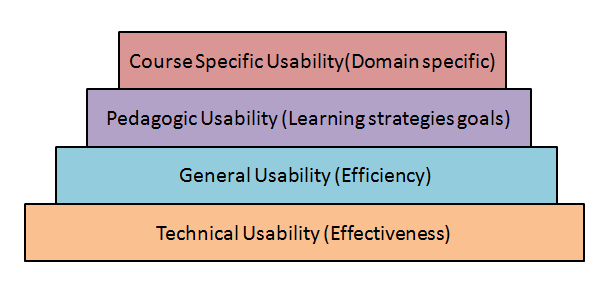
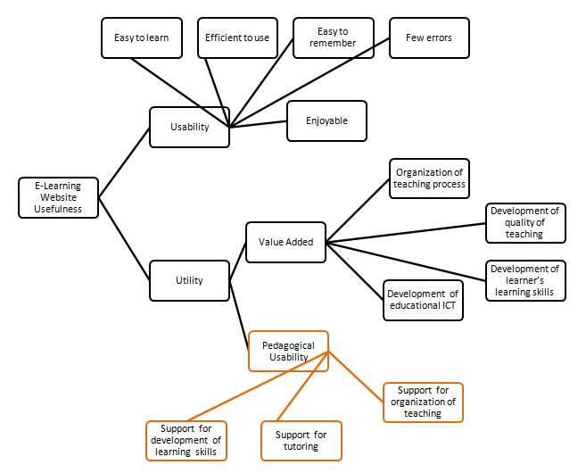
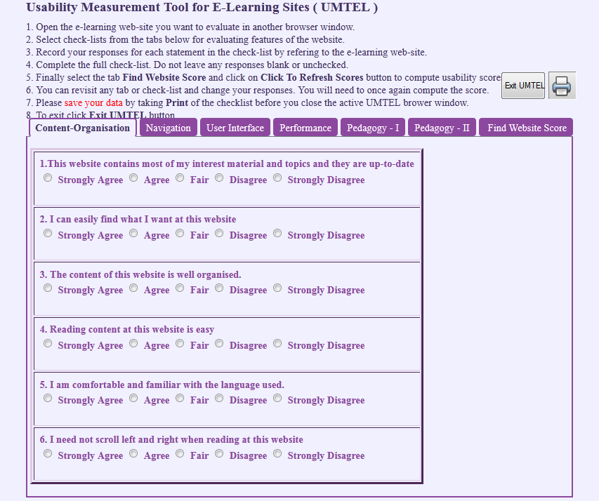
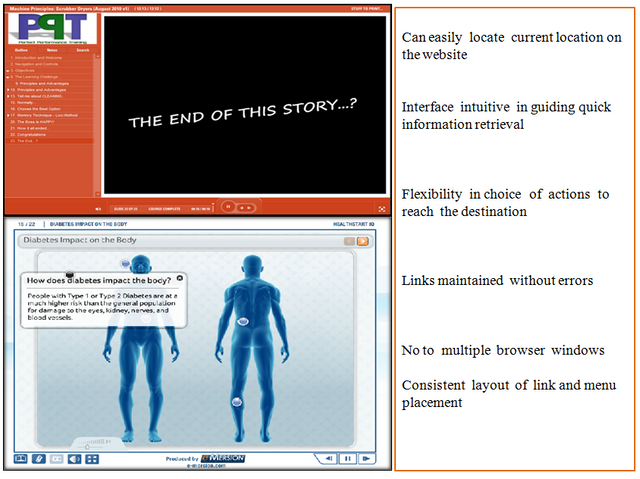
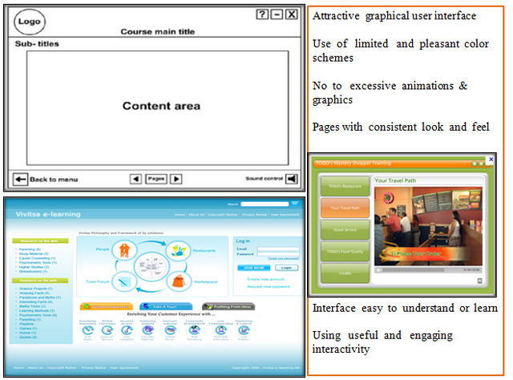
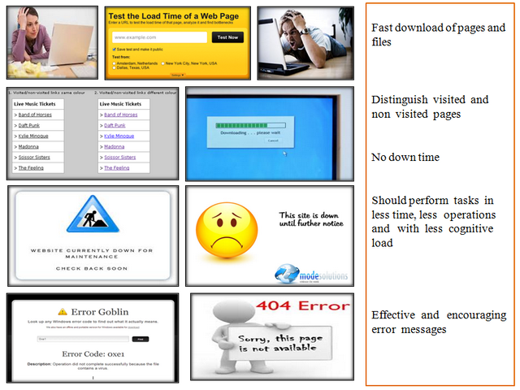
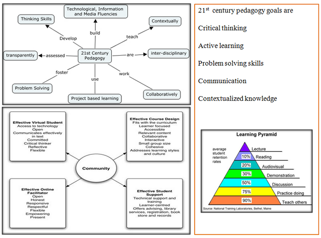
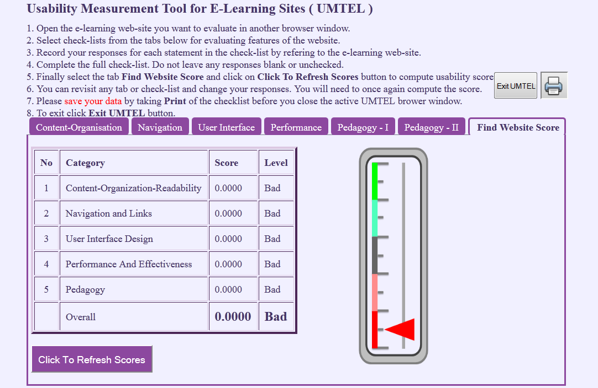
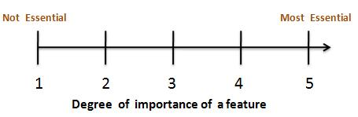
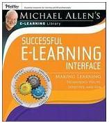

Human Computer Interaction and E-learning
E-learning course cannot be effective unless we understand the human factors like the learner’s psychology, learning needs and behavior. HCI studies in this area attempt to explore learning interfaces, pedagogy and learning experience design.
Few research topics concerned with HCI and E-learning are-
· Parallelism in learning interfaces
· Learner communication behaviors
· Cognitive understanding using multimedia
· Effectiveness of static and dynamic visuals
· Interfaces for collaborative learning
· Learning through direct-touch horizontal interfaces
· User interfaces for supporting innovation
· Design rules for effective learning interfaces
The effectiveness and efficiency of an e-learning website can be determined by measuring user's interaction patterns while using such a site. Measuring usability has many dimensions. A tool specifically desined for e-learning is often used to collect various performance data. This data is analysed by the tool to reveal patterns. In this experiment a tool named as Usability Measurement Tool for E-Learning (UMTEL) has been developed specifically and is used.
One needs to understand the nature of e-learning as being different from normal classroom learning.
What is E-learning?
E-learning is the mode of learning through electronically supported teaching material. In a larger context it makes use of information and communication technology (ICT) to build a online learning community by connecting knowledge centers to distant learners. E-learning is looked upon as the most flexible and cost-effective mode of learning anytime, anywhere at your own pace mainly out-side class-room set-up.
E-learning Websites
People learn best when they are engaged by e-content which is appealing, interactive, personalized, novel, humorous and relevant. Designing such a website is a multi-faceted complex task. Appealing visual design, engaging interaction design , pedagogy and educational psychology are the fundamentals for providing an enriching e-learning experience.
Generic website usability criteria
1. Accessibility: Making users with disabilities perceive, understand, navigate, and interact with the website. In short avoiding anything that might keep a visitor from being able to access the information on a website. Few checklist points are mentioned below …..
o Site load-time should be reasonable ( avoid flash & add-ons )
o Text-to-background contrast should be adequate for readability
o Font size/spacing should be easy to read
o Images should have appropriate ALT tags.
o Site should have a custom not-found/404 page.
2. Identity : A website should quickly and clearly project its identity , its goals and its trustworthiness to the user. Few checklist points are mentioned below …..
o Company logo should be prominently placed
o Use of tagline is recommended to make company's purpose clear
o Home-page should be digestible in 5 seconds.
o User should get the company information quickly
o User should get contact information quickly
3. Navigation : User should be able to view contents of his relevance and interest with less efforts. Information architecture and navigation guidelines plays a vital role. Few checklist points are mentioned below …..
o Main navigation items should be easily identifiable
o Labels to navigation items should be clear & concise
o Number of buttons/links should be reasonable
o Links should be consistent & easy to identify
o Support user with site search feature for easy access
4. Content : Content is the most important part. Content needs to be consistent, organized, and easy to navigate through . Few checklist points are mentioned below …..
o Headings should be clear & descriptive
o Styles & colors need to be consistent
o Emphasis (bold, etc.) should be sparingly used
o Content should be concise , to-the-point & self-explaining
o URLs should be meaningful & user-friendly
Pedagogic Usability
Pedagogic Usability denotes whether the tools , content , interface and tasks of the e-learning environment support various learners to learn in various learning contexts according to selected pedagogical objectives. [1]
There are several layers of website usability in context of learning like context-specific, pedagogic, general and technical usability. This is as shown below

Pedagogical usability should be the focal point of e-learning design. The academic content comprises of the learning objects while the pedagogy means learning strategies and mechanisms.

[1] Image reference : Silius, K. and Tervakari, A. "A multidisciplinary tool for the evaluation of usability,pedagogical usability, accessibility and informational quality of web-based courses" The Eleventh International PEG. (2003)

1. You will be able to describe website usability criteria.
2. You will be able to learn how to identify usability problems in a website.
3. You will be able to use an online usability measurement scale for finding usability value of an e-learning website.
4. You will be able to compute the extent of conformance to usability norms for various website design parameters of an e-learning site.
5. You will be able to understand the design heuristics involved in the construction of a new e-learnling website.
Prerequisite : As a pre-requisite for this experiment the users are expected to have a basic knowledge of website usability principles and guidelines. Please read additional text in text books and links under the "Reference" tab above.

1. In this experiment, you will be using an online tool named UMTEL to evaluate usability of an e-learning web-site of your choice ( target website).
2. The online Usability Measurement Tool for E-Learning Sites ( UMTELS ) is composed of six sets of checklists.
3. These checklists belong to the following categories.
(a) Content & Readability (b) Navigation (c) UI Design
(d) Performance (e) Pedagogy I (f) Pedagogy II
4. Each check-list has six statements.
5. The checklist statement describes usability aspect of the website for a specific category.
( Refer to the a screenshot of the tool in figure below )

6. You are supposed to inspect the target website and judge to what extent do you feel that
the statement shown in the tool is correct for that website.
7. Record your response whether you strongly agree , agree , fair , disagree or strongly
disagree to the statement - by checking the relevant radio button below the statement.
( Refer to the figure above )
8. Your response to each statement in the checklist will be assigned points by the tool automatically as follows
|
Response |
Strongly Agree |
Agree |
Fair |
Disagree |
Strongly Disagree |
|
Point |
1.00 |
0.75 |
0.50 |
0.25 |
0.00 |
9. You can view some illustrations from the table below to get an idea of the usability evaluation.
|
No. |
Usability Category |
Example |
|
1 |
Content-Organization-Readability |
|
|
2 |
Navigation |
Close

|
|
3 |
User Interface Design |
Close

|
|
4 |
Performance - Effectiveness |
Close

|
|
5 |
Pedagogy - I & II |
Close

|
10. After you finish recording your responses for a category, you can move to the next
category in the tool by clicking on the relevant tab within the tool. You may review the website in any sequence you wish.
11. After you finish reviewing the target website using all six checklists in the tool you can view the results by clicking the tab “Find Website Score”. You will need to press another button “Click To Refresh Scores” to see the usability scores. The result table will display total points for each category and its usability level as shown in the image below. On the right hand side you will see a level indicator which indicates summed up scores in a graphical form. When one has multiple sites to compare such a level indicator gives a visual understanding of sites in comparision to each other.

12. Usability level for each category is assigned using the table below.
|
Usability points |
0<=X<=0.2 |
0.2<X<=0.4 |
0.4<X<=0.6 |
0.6<X<=0.8 |
0.8<X<=1.0 |
|
Usability Level |
Poor |
Bad |
Moderate |
Good |
Excellent |
Note :
Your responses will not be stored in any database and will be available till the tool is there in the active browser window. If you close the browser window all your responses will be lost and you will have to fill up the responses again. There fore it is suggested to take a screen shot of each checklist and the final results after you finish recording your responses. You can use these screen shot to write your final usability report of a e-learning site.


2. What are learner specific design requirements for an e-learning website?
3. What do mean by layers of website usability ? Can you quote examples of each layer?
4. Discuss the website features essential for pedagogic usability.
Listed below are 15 features of an e-learning interface in random order
1. Course objectives enlisted
2. Multiple formats of quiz available
3. Consistency in look and feel for all screen layouts
4. Different levels of learning tasks exist to adapt
5. Learner has control over pace of learning
6. Navigable Topic Index
7. Previous button to navigate to previous learning page
8. Emphasis of used hyperlinks (topics)
9. Undo - For error recovery
10. Limited length of page to avoid scrolling
11. Chat-rooms facility
12. GUI enjoyable
13. Breadcrumb trail - keeping tract of location within application
14. Print facility
15. GUI simple and intuitive
Can you group these features into some categories?
Can you arrange these features by descending order of their importance? How ?
Prepare a survey sheet with each feature and its degree of importance in five point likert scale. You will need to conduct a survey of 15 students, 5 from each age group mentioned below and get their responses to the survey sheet.
(1) 13 to 17 (school)
(2) 18 to 22 (college)
(3) 23 to 27 (professionals)

Do you find differences in the preferences of features in these groups?
Try to analyze your data and find the reasons for the difference.
If possible create prototype GUI for each of these groups.


Successful E-learning Interface: Making Learning Technology Polite, Effective and Fun
By Michael W. Allen
Articles
1. “A brief critique on the future of learning: assessing the potential for research” by - Stephen Quinton in Book - Contemporary approaches to research on learning environments worldviews , published by world scientific publishing co.
2. “The Keys to Usability in e-Learning Websites” by Agnes Kukulska-Hulme and Lesley Shield
Urls
(as on 23/4/2012)
http://www.usereffect.com/topic/25-point-website-usability-checklist
http://www.nigelbevan.com/papers/web%20usability%20standards.pdf
http://matriisi.ee.tut.fi/arvo/liitteet/PEG2003.pdf
http://www.qou.edu/arabic/researchProgram/eLearningResearchs/successfulImplementation.pdf
http://www.srlst.com/ijist/ijism-Vol6No2/ijism62-99-117.pdf
http://eprints.ioe.ac.uk/960/1/Jara2007Pedagogical.pdf
http://www.educatorstechnology.com/2011/01/21st-century-pedagogy-teachers-should.html
http://www.upsidelearning.com/blog/index.php/2010/04/06/the-real-cost-of-bad-elearning/
http://elearningweekly.wordpress.com/2010/09/24/5-ways-to-improve-bad-elearning/
http://www.johnconnell.co.uk/blog/?p=2247
http://www.articulate.com/rapid-elearning/more-than-a-dozen-ways-to-navigate-an-e-learning-course/